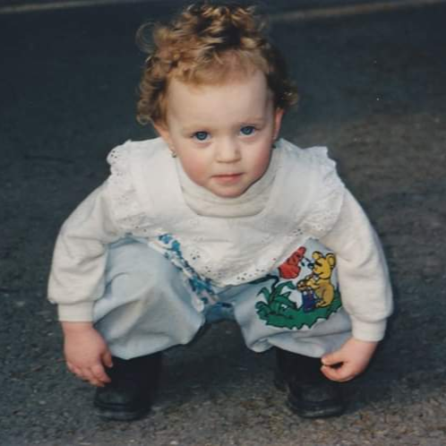

About Ema
- My favourite games include:
- Pillars of Eternity,
- Disco Elysium,
- Baldur's Gate 3,
- Dishonored,
- Night in the Woods
- and tons more.
- There are 915 games in my Steam library and I have touched maybe under a third of them.
These are the facts.
My main creative outlet are pen & paper TTRPGs.
Before I found a DnD group here in Hamburg, I used to be the forever DM, and a lot of my time continues to revolve around that; mostly a lot of writing and setting up in our virtual tabletop. Lately I have been procrastinating in favour of rewatching campaign 2 of Critical Role.
Hobbies besides pen & paper TTRPGs include: video games, board games, crochet, and pretending that I'm finally gonna start learning to sew. Still haven't unboxed the machine I've had for 3 years now.
